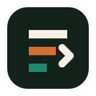

Quick Status
IdleLoading status...

Local Control Panel
A privacy-first cockpit for your local log pipeline. Inspect health, preview what will leave the machine, and trigger direct or remote delivery into Notion.
Profiles
Use preset delivery profiles for file archiving, Notion pages, remote intake, or Supabase storage.
Loading status...
Loading...